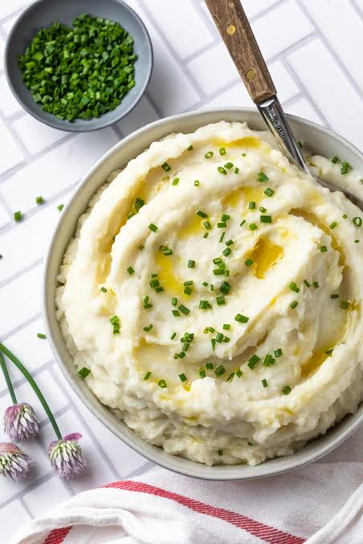

Home
Mashed Potatoes

Description
Mashed potatoes (and stuffing) are the best part of any Thanksgiving or holiday meal and the perfect side with almost anything! They go especially well with sauces, gravy or things like Salisbury steak, beef tips, or Swiss steak.
Ingredients
- Butter
- Milk
- Salt
- Pepper
- Potatoes
- Garlic
Steps
- Peel the Potatoes: Peel the potatoes
- Cut into quarters and place into cold salted water in a large pot (cold water helps to ensure they cook evenly)
- Boil the Potatoes: Cook potatoes in boiling water until tender. The length of time you need to boil the potatoes depends on how big they are cut. I cut my potatoes into quarters and boil them for about 15 minutes. To check if your potatoes are ready, use a fork to poke the potato and see if it is tender!
- Mash the Potatoes: Once well-drained, mash with the potatoes with a hand masher and with melted butter, warmed milk, and salt & pepper